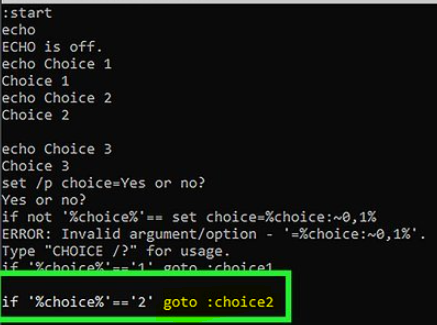
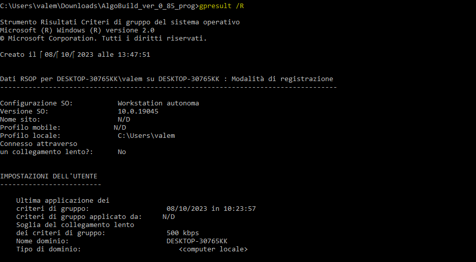

| a | b | c| d | e | f | g | h | i | l | m | o | p | r | s | t | v | x | w | ||||||||
GOTO | Indirizza l'interprete dei comandi di Windows a una riga con etichetta in un programma batch. |  | ||||||
GPRESULT | Visualizza le informazioni relative a Criteri di gruppo per il computer o l'utente. |  | ||||||
GRAFTABL | Abilita Windows alla visualizzazione di un set di caratteri estesi in modalità grafica. | commando obsoleto stotistuito da chcp | ||||||